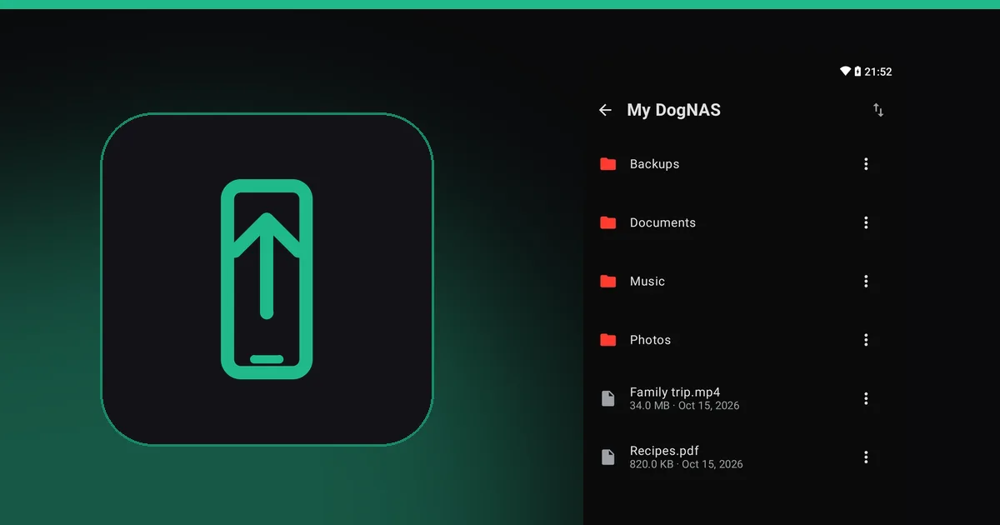
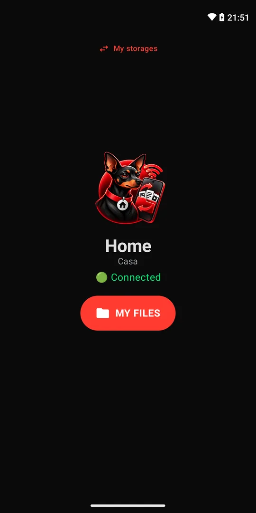
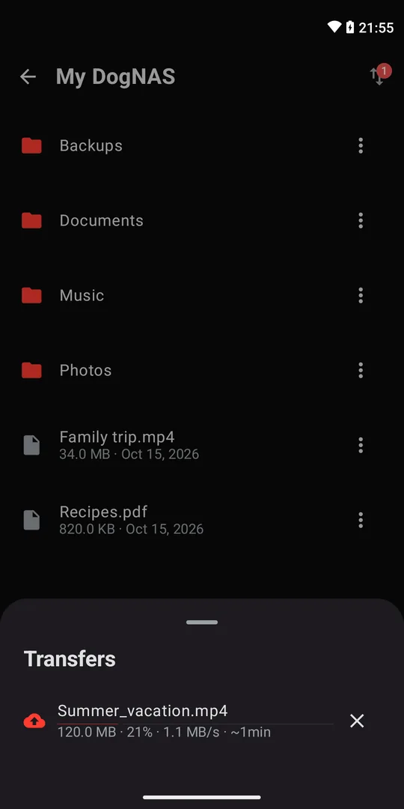
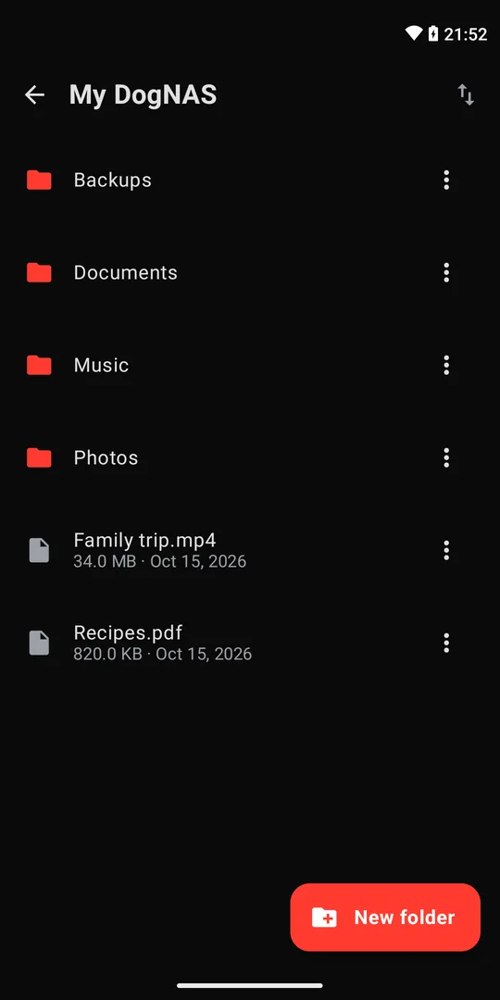

How to free up space on your Android phone without losing your photos

"Storage almost full" always shows up at the wrong time: at a party, on a trip, just as you were about to record a video. The good news is that you can recover a lot of space in a few minutes, and move the heaviest stuff off the phone without losing anything.
Start with the easy part
Menus change with the maker and the Android version, but the ideas are the same:
- Use Android's own tool. In Settings, look for Storage and the option to free up space. Google's Files app also suggests what to delete.
- Clear the cache of the apps that take the most room, in Settings, Apps.
- Uninstall what you don't use. Idle apps take space and still update on their own.
- Delete duplicates and old downloads, such as installers, PDFs and repeated screenshots.
- Review WhatsApp and other messengers: photos, videos and audio from groups often take gigabytes.
That recovers space, but only for a while. Photos and videos remain the heaviest, and the question becomes: where do you take all of it?
Move photos and videos off the phone
The most common options are the cloud, a computer, and an external card or disk. The cloud is handy, but its space is limited and, after that, comes the subscription. A server of your own at home solves it without a subscription: the phone sends files over Wi-Fi and they stay in your own storage.
With DogNAS
DogNAS turns a spare Android (7.0 or newer) into a file server for your home. On your phone, use DogNAS Client Lite, which is free:
- Install the server on the old Android and create your profile.
- On the phone that is out of space, open Client Lite, point the camera at the profile's QR Code and type the PIN.
- Send the photos and videos to DogNAS from the transfer queue.
- Check that the files made it to the server before deleting anything from the phone.



Important precautions
- Check before deleting. Open a few photos and videos on the server before freeing up the phone's space.
- Keep an independent copy. DogNAS keeps files in the storage you chose and does not back up on its own. For what is irreplaceable, keep a second copy somewhere else.
- Your network only. Access is over your home Wi-Fi, so the server must be on and connected when you want to upload or download.
- Free plan limit. DogNAS manages up to 64 GB; Pro, a one-time purchase with no subscription, unlocks the device's whole storage.
Summary
Clear the cache, the apps and the duplicates, then send photos and videos to a place of your own. If you don't have one yet, use an old Android as a file server and keep your phone light.